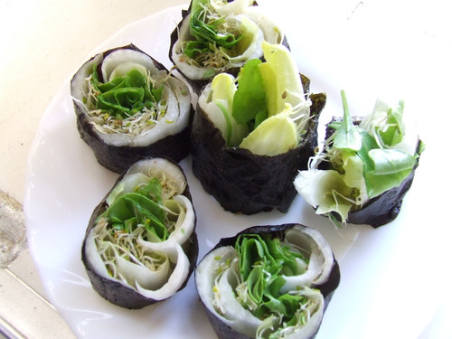
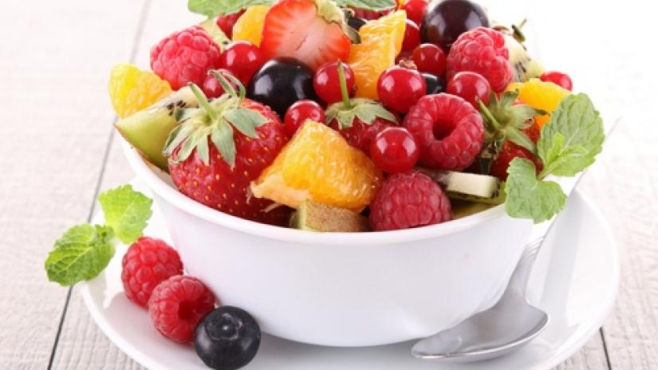
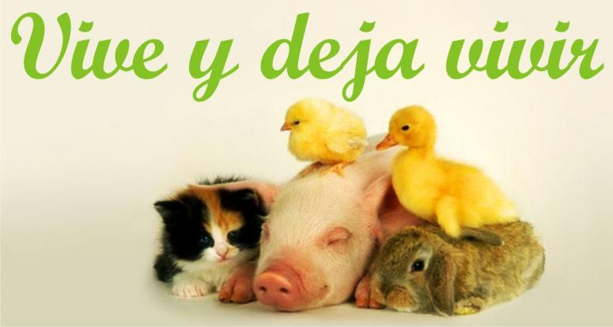
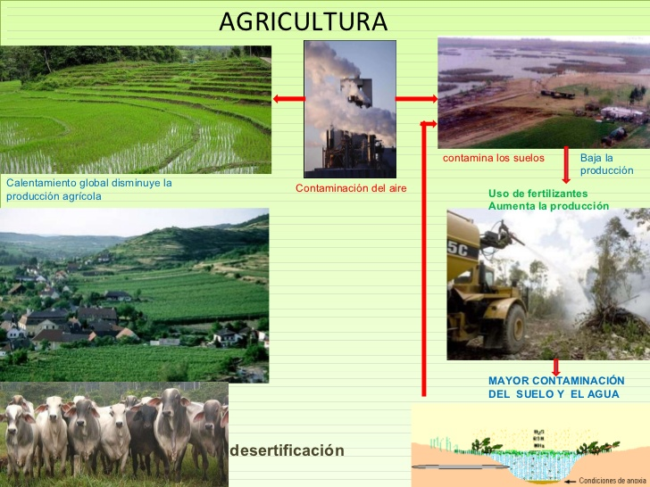

Tipos de veganismo
Veganismo alimenticio
|  | Crudivegano La alimentación cruda consiste en ingerir alimentos naturales sin aditivos artificiales y que no se expongan a una temperatura superior a la que produce el sol. Se vincula con la llamada "alimentación viva". |
|  | Frugivorismo También conocido como frutismo o frugivorismo, es un movimiento nacido en Alemania alrededor del año 1800. Uno de sus pioneros fue el profesor Arnold Ehret, creador también de la dieta sin mucosidad, a base de frutas. El frutismo hace incapié en mantener una dieta a base de frutas, debido a que considera que son el alimento más saludable que existe y que, además, era lo que comían los primeros humanos que poblaron la tierra. |
Veganismo Ético
|  | las personas además de seguir una alimentación vegana, también llevan esa filosofía a las acciones del día a día. En estos casos los sujetos se prohíben vestir con prendas cuyos tejidos son de origen animal, como el cuero, por ejemplo. Además, rechazan utilizar a los animales para cualquier fin. |
Veganismo Ambiental
|  |
las personas que rechazan utilizar productos de origen animal amparándose en un motivo: consideran que la cría industrial de los animales es perjudicial para el medio ambiente y repercute negativamente en los ecosistemas terrestres. La explotación animal repercute de varios modos en el medio ambiente: |
El veganismo es una manera de demostar el amor, a que vivan los del reino Animalia por que se les castiga a ellos, una manera de que se viva en pas es este tipo de alimentación y no solo adoptandola, tambien hacer una buena practica como estilo de vida, contando con todas las precauciones que le corresponden
Algunos veganos famosos: Ana Moreno, Moby, Alanis Morrisette, Carl Lewis, Mike Tyson, Steve Jobs, Leona Lewis, Kim Basinger, Michele Pfeiffer, Uri Geller, Ringo Star…
@2018